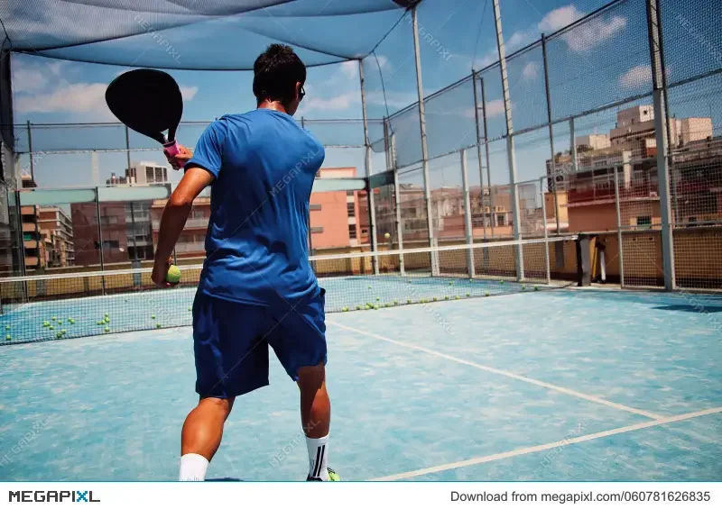
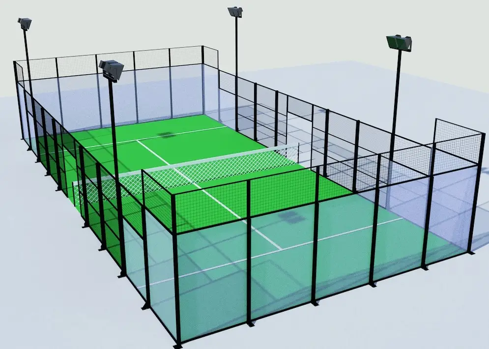

Comment jouer au padel ? Règles détaillées, schémas et astuces pour débuter
Publié par la Rédaction du Guide du Padel

L'histoire fascinante du padel
Contrairement aux idées reçues, le padel n'a pas été inventé en Espagne, mais au Mexique en 1969. Enrique Corcuera souhaitait construire un court de tennis dans sa propriété d'Acapulco mais manquait d'espace. Son idée géniale fut de réduire la taille du terrain et de l'enclore de murs pour empêcher les balles de s'échapper chez les voisins.
Importé rapidement en Espagne puis en Amérique du Sud, ce sport est devenu la discipline de raquette connaissant la croissance la plus fulgurante au monde.
Le concept : Un savoureux mélange de 3 sports
Pour bien appréhender le padel, dites-vous qu'il s'agit de la fusion parfaite entre :
- Le Tennis : Pour le filet central, l'utilisation de balles similaires et le décompte des points.
- Le Squash : Pour les parois fermées et l'obligation d'intégrer les murs et vitres dans la stratégie d'échange.
- Le Billard : Pour la maîtrise de la géométrie, des trajectoires et du calcul des angles de rebond.
Ici, la force brute est souvent pénalisée : c'est un véritable jeu d'échecs en mouvement où la patience et le positionnement priment sur la puissance de frappe.
Schéma 1 : Vue schématique du terrain officiel de padel (10m de large sur 20m de long).
Les 4 piliers fondamentaux des règles du jeu
1. La configuration de la piste et des joueurs
- Obligation du double : Le padel se joue exclusivement à 4 joueurs (2 contre 2). Il n'existe pas de compétition officielle en simple.
- Vitres et grillages : Le bas et l'arrière du terrain sont fermés par des vitres en verre trempé. Les côtés disposent d'une portion en grillage métallique. Retenez bien : la vitre renvoie la balle proprement, le grillage provoque des rebonds plus imprévisibles.
- Sécurité (La dragonne) : La lanière de votre raquette doit obligatoirement être passée autour de votre poignet à chaque instant sur le terrain. En cas de lâcher de raquette, c'est une règle de sécurité absolue.

2. Le service : L'engagement à la cuillère
Le service au padel obéit à des règles strictes pour éviter l'ascension de services surpuissants comparables au tennis :
- Le joueur se place derrière sa ligne de fond, dans son camp, et doit faire rebondir la balle une fois au sol avant de la frapper.
- La frappe de la balle doit impérativement s'effectuer à hauteur de la ceinture ou en dessous. Pas de service par-dessus l'épaule !
- La balle servie doit traverser le filet en diagonale et atterrir précisément dans le carré de service adverse opposé.
❌ Piège classique au service
Après le rebond dans le carré adverse, si la balle touche le grillage métallique, le service est considéré comme une faute. En revanche, si elle touche la vitre en verre après son rebond au sol, le service est parfaitement valable !
Schéma 2 : Trajectoire obligatoire du service en diagonale vers le carré adverse.
3. La règle d'or du rebond sur les parois
C'est la mécanique qui déstabilise le plus les joueurs débutants venant du tennis :
- Le sol d'abord : Lorsque vous renvoyez la balle chez l'adversaire, elle doit obligatoirement toucher le sol adverse en premier avant d'entrer en contact avec une vitre ou un grillage. Si votre frappe tape directement la vitre du fond en camp adverse sans toucher le sol, c'est une faute directe.
- Utiliser ses propres vitres : Si vos adversaires vous envoient une balle puissante qui vous dépasse, vous avez le droit de laisser la balle rebondir sur votre vitre arrière, puis de frapper dedans pour la renvoyer par-dessus le filet vers le camp adverse. C'est un coup de sauvetage redoutable.
💡 L'astuce du coach : Devenez l'ami des vitres
N'ayez jamais peur de laisser reculer la balle. Fléchissez vos jambes, observez la balle taper la vitre derrière vous, et attendez qu'elle revienne vers l'avant pour la frapper en rythme. Pour aborder vos déplacements en toute sécurité, pensez à vous équiper de chaussures de padel spécifiques.
Schéma 3 : Utilisation défensive de la vitre arrière pour laisser passer et relancer la balle.
4. Le système de comptage des points
Le décompte des points est strictement identique à celui du tennis traditionnel :
- Les points s'échelonnent ainsi : 15 / 30 / 40 / Jeu.
- En cas d'égalité à 40-40 (deuce), un point décisif appelé "Point en Or" (No-Ad) est très souvent appliqué en tournoi et loisir pour départager immédiatement les équipes.
- Une manche (set) est remportée dès qu'une équipe atteint 6 jeux (avec 2 jeux d'avance minimum). Un tie-break est joué en cas d'égalité à 6 partout. Un match se dispute généralement au meilleur des 3 sets.
🎒 Le Kit de Survie du Débutant
Pas besoin de vous ruiner pour démarrer. Voici les éléments indispensables pour entrer sur le terrain bien équipé :
5. Les erreurs classiques des débutants à éviter
- S'écarter des vitres : Ne fuyez pas la vitre de fond. Restez proche pour accompagner la balle après son rebond.
- Chercher à frapper trop fort : Le padel est un sport de placement. La puissance brute donne souvent des balles faciles (rebond haut sur la vitre) pour vos adversaires. Jouez "en toucher".
- Oublier de monter au filet : La zone d'attaque se situe au filet. Dès que vous avez l'opportunité de lober vos adversaires pour les repousser au fond, prenez leur place au filet.